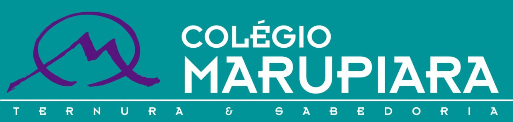
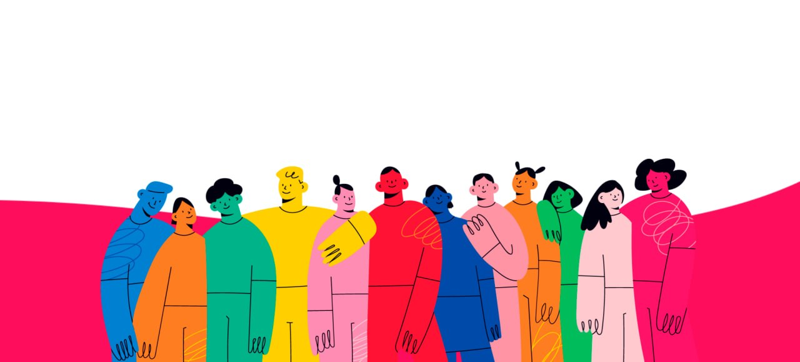

Em desenvolvimento
O estudante está começando a construir a habilidade, com apoio, modelos, repetição e mediação próxima.
Preencha os dados do aluno e selecione os indicadores observados. O report card será atualizado automaticamente para salvar como PDF.
Antes de salvar: selecione “Salvar como PDF”, marque “gráficos/fundos da página” e desmarque “cabeçalhos e rodapés”.
Sugestão de nome do arquivo: Objetivo_Year7_Term1_Cecilia_Report-Card.pdf




Term 3 — Media, climate, global culture, argumentation, portfolio and exhibition.
Os indicadores descrevem desenvolvimento observado no Term 3. Não são notas isoladas: mostram como o estudante usa inglês, estratégias e autonomia em situações de aprendizagem.
O estudante está começando a construir a habilidade, com apoio, modelos, repetição e mediação próxima.
O estudante já demonstra a habilidade em situações conhecidas, usando exemplos, frames e orientação quando necessário.
O estudante demonstra a habilidade com mais frequência, segurança e consistência dentro das propostas do term.
O estudante amplia a habilidade, faz conexões e começa a usar estratégias com mais independência.
Dimensões adequadas ao Middle Years: linguagem com propósito, investigação, colaboração, autonomia e uso do inglês para aprender.
| Observed area | Selected development stage |
|---|